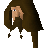

Omart

| Config name | omart |
| NPC id | 350 |
| Combat level | hidden |
| Options | Talk-to |
| Wander range | does not move |
| Movement | nomove |
| Area folder | area_ardougne_west |
| Defined in | scripts/areas/area_ardougne_west/configs/omart.npc |
Omart
A nervous looking fellow.
Show all 1 spawn on the world map → Open in knowledge graph →
Locations
| Area | Coordinates | Level | Count | Map |
|---|---|---|---|---|
| Battlefield | 2559, 3266 | 0 | 1 | view |
Dialogue
PlayerHello Omart.
OmartHello adventurer. I'm afraid it's too risky to use the ladder again, but I believe that Edmond's working on another tunnel.
PlayerHello Omart.
OmartHello traveller. The guards are still distracted if you wish to cross the wall.
PlayerOk, lets do it.
PlayerI'll be back soon.
OmartDon't take too long, those mourners will soon be rid of those birds.
OmartWell done, the guards are having real trouble with those birds. You must go now traveller, it's your only chance.
OmartKilron!
OmartYou must go now traveller.
PlayerOmart, Jerico said you might be able to help me.
OmartHe informed me of your problem traveller. I would be glad to help, I have a rope ladder and my associate, Kilron, is waiting on the other side.
PlayerGood stuff.
OmartUnfortunately we can't risk it with the watch tower so close. So first we need to distract the guards in the tower.
PlayerHow?
OmartTry asking Jerico, if he's not too busy with his pigeons. I'll be waiting here for you.
PlayerHello there.
OmartHello.
PlayerHow are you?
OmartFine thanks.
Referenced in scripts
scripts/areas/area_ardougne_west/scripts/omart.rs2